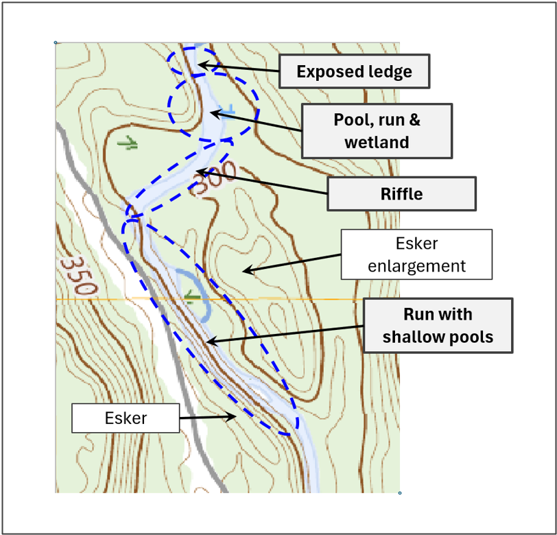
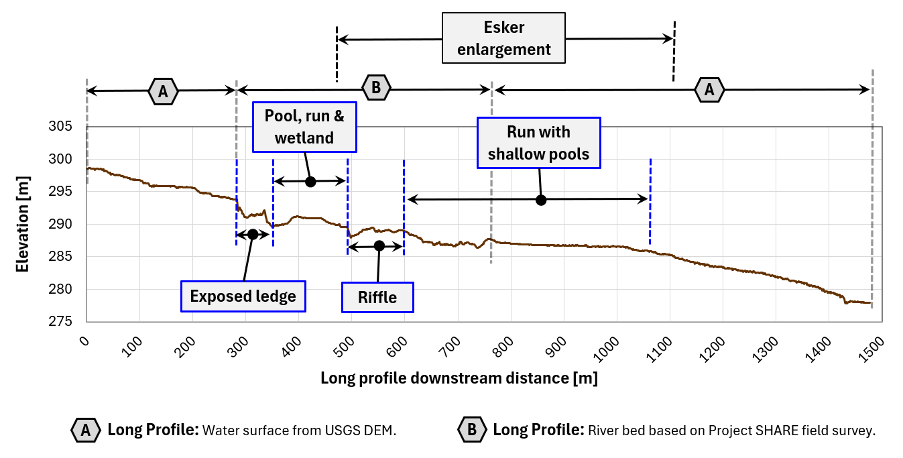
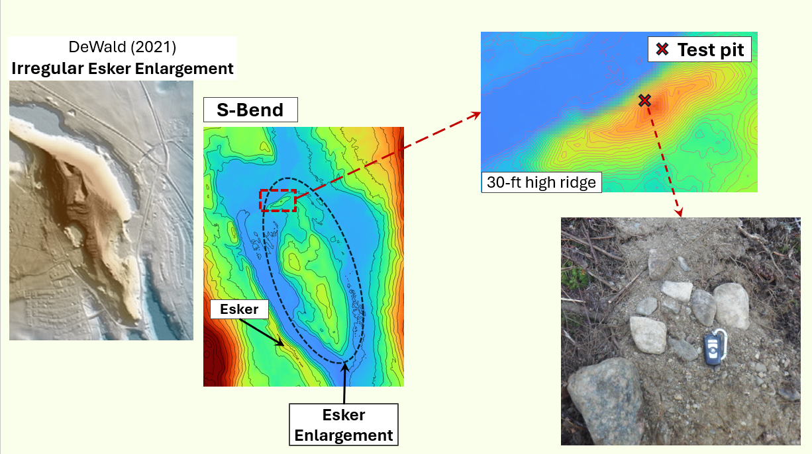
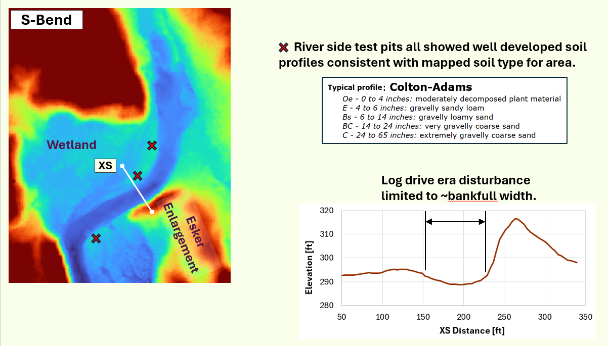

Sub-Area_2 starts in a confined reach, then runs over a section of exposed ledge, drops into a wide pool-riffle-run reach with
a shallow wetland, with emergent plants, on river-right. The river steepens, becoming a contiuous riffle with a bench on river-
left and the upstream end of an esker enlargement on river-right. This sub-area finishes with a relative straight run of river
that conists of runs and shallow pools. Each reach is further descibed below:
Confined river segment to/including exposed ledge: This reach transitions from a grave/cobble bed to exposed ledge: The trees on either
side of this reach bear numerous ice scars, indicating frequent ice jam formation. Also, there is what appears to be an ice jam
overflow channel on river right (click on Exposed ledge box below). The river spanning exposed ledge provides local elevation
control for the upstream river segment. The combination of the ledge outcrop and the confined river segment is likely what initiates
re-occuring ice jams at this location. See DeMunck S., et al., 2017. River predisposition to ice jams: a simplified geospatial model.
Natural Hazards and Earth System Sciences.
Pool, (riffle,) run and wetland: The flow accelerates as it flows over the ledge providing plenty of energy to scour a pool at the base
of the drop. As the river widens, the flow loses energy it deposits the coarse sediment forming the crest of a riffle. There is a bench and wetland on
river-left. Downstream of the river crest the river bed has a shallow slope allowing the water to spread out and fines to deposit, thus sections of the
river bed are embedded.
Riffle: The river narrows as it flows between a bench of river-right and an exker enlargment on river left. The combination narrowing and increased
grades has resulted in a bed that consists of cobbles and small boulders. The esker enlargement is a potential source of cold groundwater, river restoration
may want to include a pool in this section of river.
Run with shallow pools: The final reach within this area of interst is relatively straight, plane-bed strech with several shallow pools.
There is an esker on river-right and a wetland with several small channel of river-left along the upstream half of this reach. Along the backside of the
wetland is the aforementioned esker enlargement. Historically, Atlantic salmon have built redds along the river-left side of the reach, presumably to take
advantage of upwelling ground water sourced from the esker enlargement.


A test pit was dug into the side of the esker enlargement roughly 15 feet above the river bed. The stest pit sediments
consisted of sand, sub-angular gravel plus a few small cobbles.
For more information about esker enlargements, see Dewald N., et al. 2021. Distribution, characteristics and formation
of eker enlargements. Geomorphology 392, 107919. doi.org/10.1016/j.geomorph.2021.107919

Three pits were dug in riverside benches at the locations indicated in the above figure, all three test pits displayed
sandy loam soil profiles consistant with a Colton-Adams soil type. The riverside bench sediments were notable different
than the much coarser esker enlargement sediments noted above.
SubArea_1_Overview
Main Page